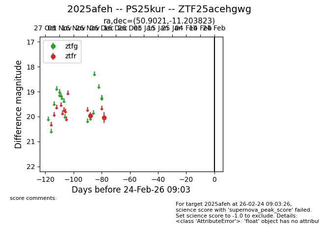
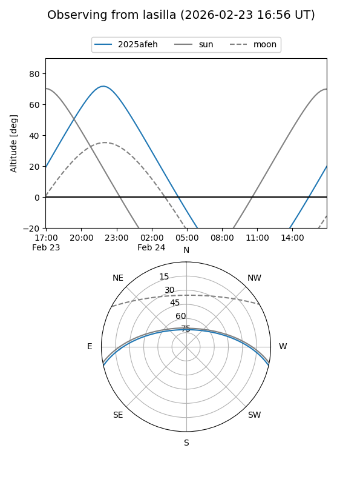
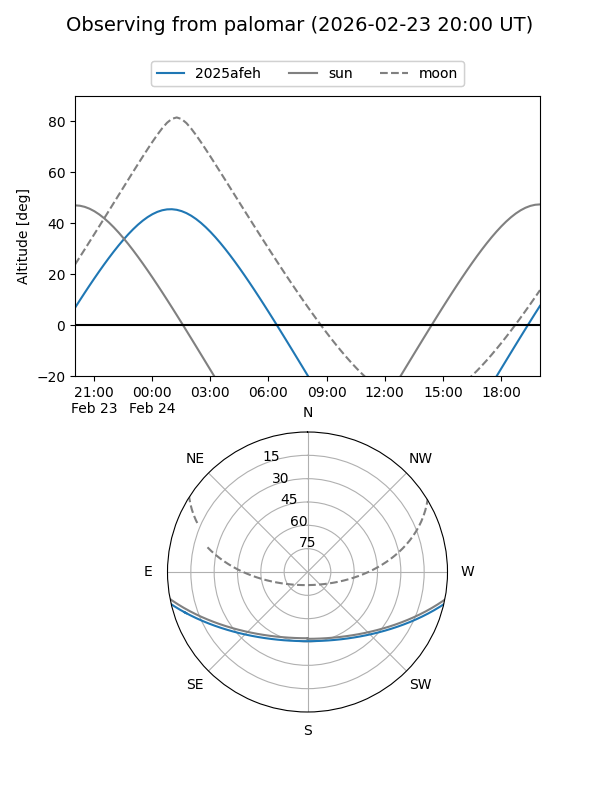

2025afeh
Target 2025afeh at 2025-12-30 22:44
Aliases and brokers:
FINK: fink-portal.org/ZTF25acehgwg
Lasair: lasair-ztf.lsst.ac.uk/objects/ZTF25acehgwg
ALeRCE: alerce.online/object/ZTF25acehgwg
TNS: wis-tns.org/object/2025afeh
YSE: ziggy.ucolick.org/yse/transient_detail/2025afeh
alt names
ZTF25acehgwg (ztf,fink_ztf)
2025afeh (tns,yse)
PS25kur (panstarrs)
Coordinates:
equatorial (ra, dec) = 50.9021,-11.20382
equatorial (HMS+DMS) = 03:23:36.50,-11:12:13.76
galactic (l, b) = (196.4075,-50.90960)
Flags:
Photometry:
last ztfr=20.04
2 ztfr detections
Lightcurve

Visibility


Additional plots